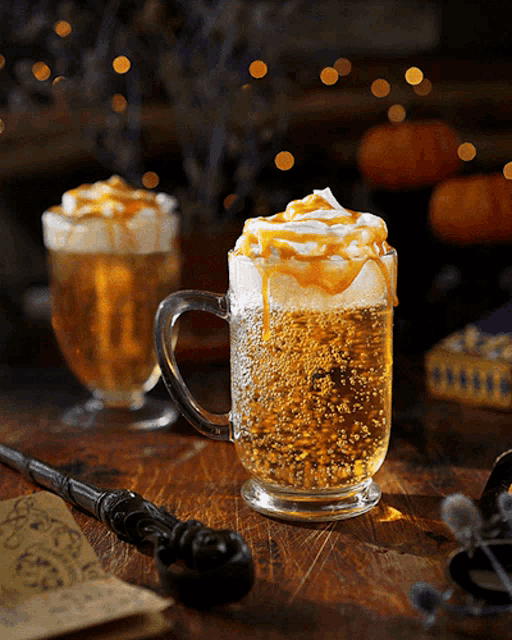

ALTA NOS PREÇOS DE CERVEJA AMANTEIGADA
Sexta-feira passada (12), houve um aumento considerável no preço da cerveja amanteigada, queridinha por muitos alunos de Hogwarts, que, a partir do terceiro ano, podem ir visitar Hogsmeade todos os finais de semana.
A causa desse aumento, que foi de dois sicles para 4, com um aumento de 100%, deve-se á baixa na produção de um dos ingredientes mais importantes para a produção da bebida: o caramelo. Com os recentes conflitos do mundo, muita da produção do açúcar, que compõe o caramelo, foi cessada. Com isso toda a produção diminuiu muito, o que resultou nesse aumento do preço.